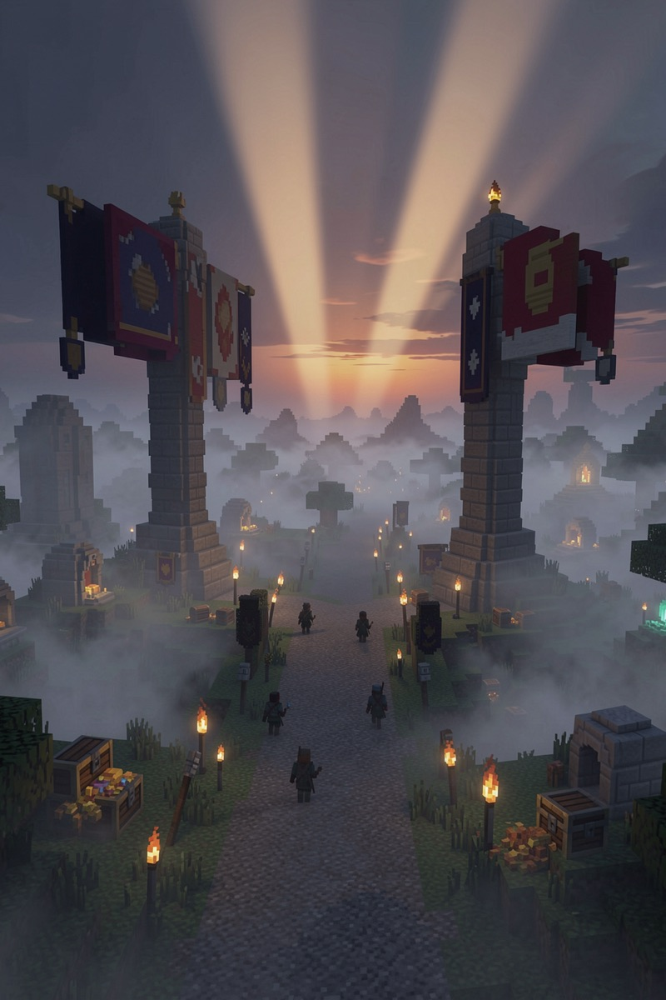
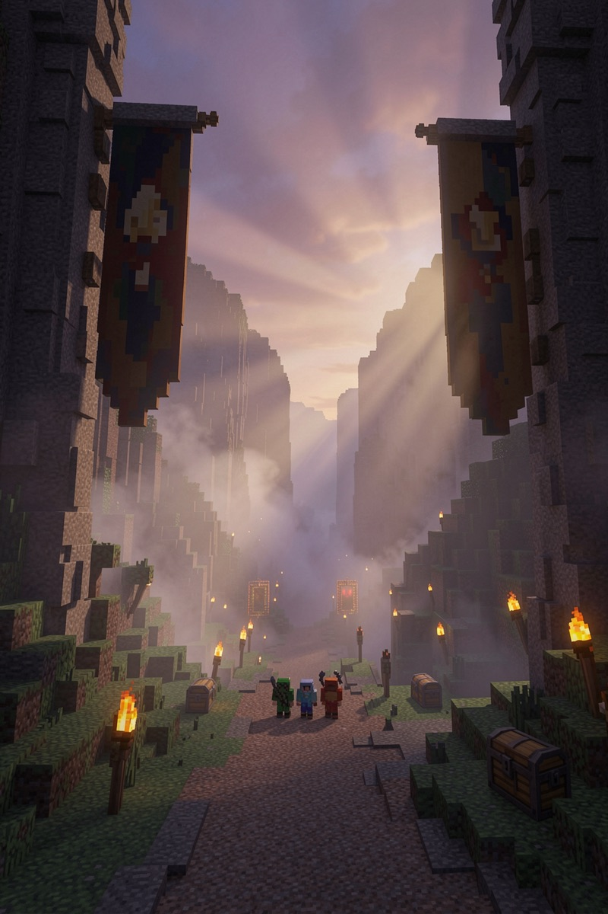
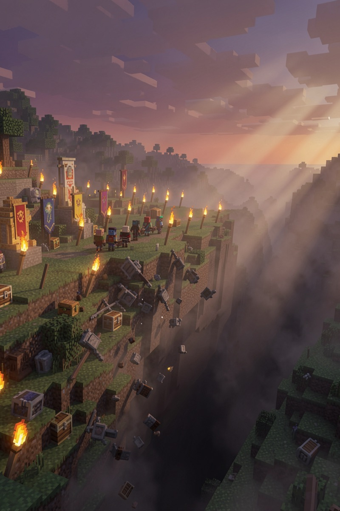
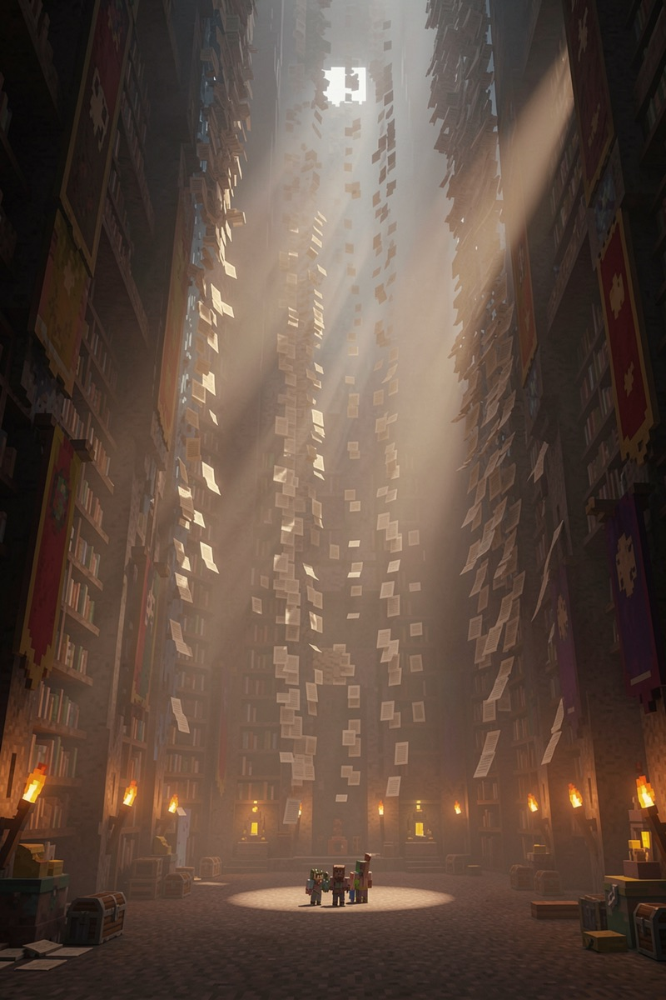
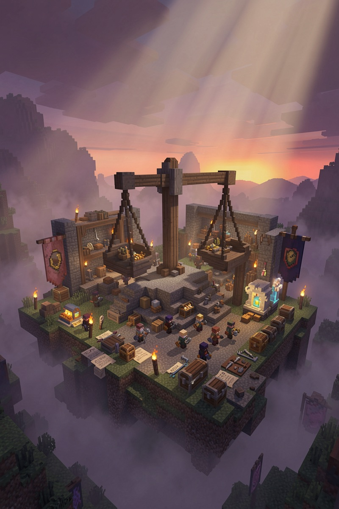
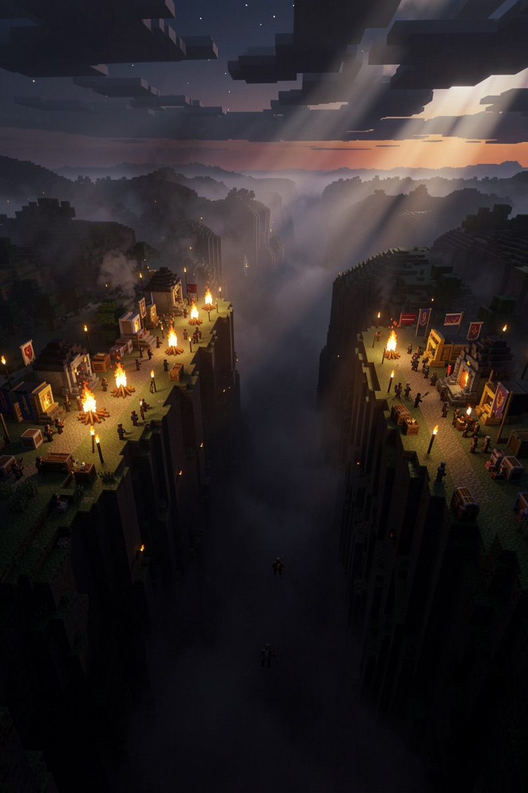
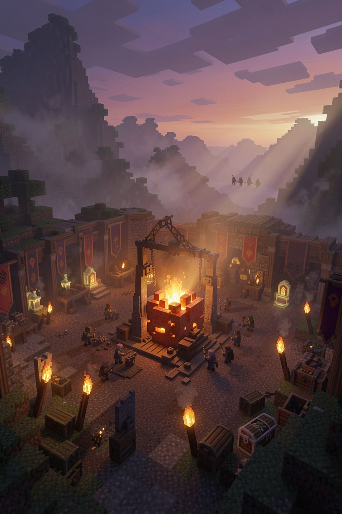
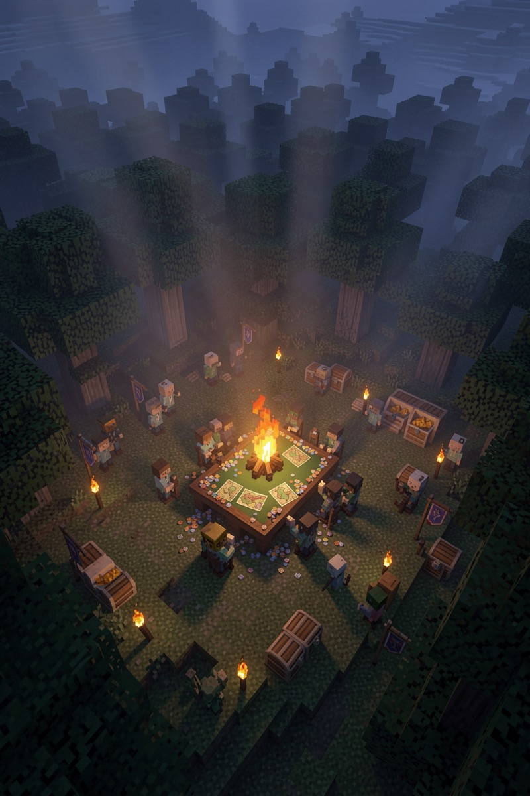

本期特别:上半案已开奖,章都盖好了——给你看看本馆开奖长什么样;下半案剧情反转,正悬。
状态:半案已结 · 半案正悬
两句都在圈里疯传,互为反驳,谁也说服不了谁。我们把它们一起搬上了秤。

同一批 16 道"任意数连加"题,10 个模型先裸考(禁草稿、禁工具)。裸考结果是一道悬崖:
| 模型(裸考) | 得分 |
|---|---|
| 豆包 Seed 1.6 | 14/16 |
| Claude Sonnet 4.6 | 12/16 |
| DeepSeek v3.2 / Haiku / Flash-Lite | 4/16 · 3/16 · 2/16 |
| GPT-4.1、GPT-4.1-mini、Gemini Flash、Llama 70B、Qwen 72B | 五家全部 0/16 |

再发一个计算器工具,同题重考:七家直接 16/16 满分……几乎全员通关。但 DeepSeek 拿着计算器只考了 6/16——工具在手,不会使。
于是两枚章落墙(共识墙有案可查):
伪共识"给了计算器,模型就能拿满分"——DeepSeek 当庭现形
松动中"裸模型做不对多位数四则"——豆包 14/16、Sonnet 12/16 把绝对句撬松了
上半案结案。这就是本馆的开奖:有数据、有章、有翻案入口。
新题型:从合同文件里把数字找出来,填进表格(20 题)。同样的模型,同样发工具:
| 模型 | 裸考 | 挂工具 | 工具的作用 |
|---|---|---|---|
| Claude Sonnet 4.6 | 20/20 | 20/20 | 根本不需要 |
| 豆包 Seed 1.6 | 19/20 | 20/20 | 锦上添花 |
| Claude Haiku 4.5 | 17/20 | 20/20 | 真救了它 |
| Gemini Flash-Lite | 14/20 | 10/20 | 倒挂:害它丢了 4 分 |
同一副装备,在算术题里近乎万灵,在填表题里能把人拖下水。工具不是解药,是双刃。(下半案单次跑,按馆规不开奖。)

装备本身还有重量:我们称过市面上的设计技能包——最重的一只,光说明书全集就 25 万字(token),是最轻的(1,328 字)的 189 倍。全要塞进模型脑子里,按字收费。
开挂还是交税,看来不取决于装备,取决于题。边界在哪,至今没人画过——这就是下半案悬着的问题。

"五家挂零的模型,发个计算器全满分——这还不叫解药?个别翻车是装备不熟,练练就好。"
"填表题摆着呢:工具一挂反而掉分。说明书 25 万字也是钱。装备先收税,生效看运气。"
(两派均为论点归纳;上半案有章,下半案待多遍重跑。)

① 同题同模型,挂/不挂工具,各跑多遍全报——倒挂是真现象还是单次抽卡,跑了才算。
② 按题型分桶:算术、填表、写作——解药/税的边界,一桶一桶画。
③ 工具税算明账:多烧多少字、多花多少钱、分数动了几分——三个数并排上墙。

全量批会把每一桶的边界画出来——装备是解药还是税,届时一桶一桶揭。同一副装备救过 Haiku、坑过 Flash-Lite,这条边界画出来那天,整个 agent 圈的装备清单都得重写。
